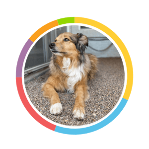
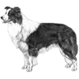
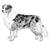
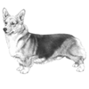

Image courtesy of © EmbarkDNA.
Arya's Ancestry
Recently, Arya sent in her DNA to a special doggie science lab. She now has a full report of her ancestry, family tree, and inherited traits. For your convenience, Arya has broken up this portion of The Dog Blog into two sections.
The Breed Types page highlights three major breeds that make up Arya's genetic background. In case you're not well versed in pup breeds, Arya made sure to include a little description and a photo for ya!
The Inherited Traits page details a handful of quirks Arya inherited from her doggie ancestors. While Arya is a unqiue creature, it is very clear where some of her neurotic behavior comes from.
Arya was even so kind as to include a brief overview of her ancestry and inherited traits below. She's so considerate.
Breed Types Overview
|

Border Collie |

Australian Shepard |

Pembroke Welsh Corgi |
Arya comes from a long line of herding dogs. The bulk of her genetic DNA comes from her family lineage of Border Collies, Australian Shepards, and Pembroke Welsh Corgis.
Visit Arya's Breed Types page for more!
Inherited Traits Overview
|
High Anxiety |
Gorgeous Physique |
Grand Athlete |
Many of Arya's behavioral and physical traits come from her genetic background. The few specifc traits Arya decided to highlight are her busy mind (a.k.a. anxiety), stunning physical beauty, and natural athleticism.
Visit Arya's Inherited Traits page for more!